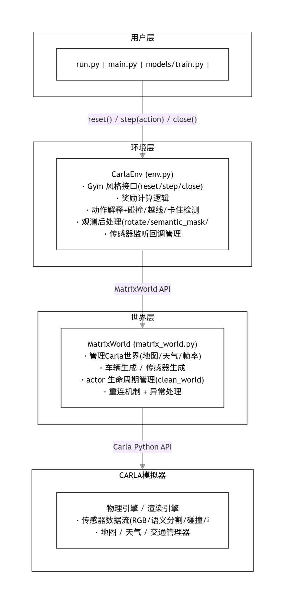
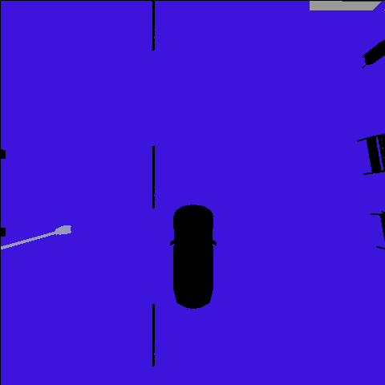
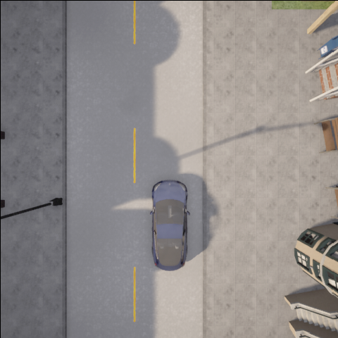

carla_2d_deeprl
基于 CARLA 模拟器的极简 2D 深度强化学习自动驾驶环境。
📑 目录
项目简介
carla_2d_deeprl 是一个基于 CARLA 模拟器实现的轻量级 2D 强化学习自动驾驶环境，提供类 Gym 接口、语义分割俯视图观测和可配置的奖励函数，适合快速验证 DQN 等深度强化学习算法。环境支持基于俯视视角的2D观测（RGB图像或简化语义分割图像），并设计了以车道中心为目标的奖励函数：智能体行驶在车道中心时获得正奖励，偏离车道中心则根据距离获得负奖励。该环境虽未完全兼容OpenAI Gym标准，但遵循Gym式接口设计，可直接用于测试各类基础强化学习算法。
核心功能
- 2D观测输入：支持RGB图像或简化语义分割的俯视视角观测，可自定义观测画面的宽高尺寸。
- 可配置仿真场景：支持切换不同天气效果，兼容多种城市场景地图。
- 训练优化模式：提供无渲染模式，大幅提升训练效率，减少不必要的性能开销。
- 调试辅助功能：内置调试模式，便于快速验证环境逻辑与算法效果。
- 训练加速特性：提供Fast Mode，专为强化学习训练优化，减少仿真器冗余计算。
使用方法
1. 环境搭建
# 克隆仓库
git clone https://github.com/mt960/nn.git
cd nn/src/carla_2d_deeprl
# 创建虚拟环境
python -m venv venv
# Windows
venv\Scripts\activate
# Linux/Mac
source venv/bin/activate
# 安装依赖
pip install -r requirements.txt
2. 启动 CARLA
下载 CARLA 0.9.16 并启动：
# Windows
CarlaUE4.exe
# Linux
./CarlaUE4.sh
3. 运行演示
# 快速测试环境（直行 5 个 episode）
python run.py
# 运行预训练模型演示
python main.py demo
# 训练新模型
python main.py train
# 运行自动化测试
python main.py test
架构总览

三层分离设计：
| 层级 | 文件 | 职责 |
|---|---|---|
| 用户层 | run.py, main.py, models/ |
调用环境接口，运行算法 |
| 环境层 | min_carla_env/env.py |
封装 Gym 接口，计算奖励，处理观测 |
| 世界层 | min_carla_env/matrix_world.py |
操作 Carla 模拟器，生成管理 actor |
观测空间
环境提供 2D 俯视视角的观测图像，支持两种模式：
语义分割模式（默认，channels=1）

将 CARLA 的 13 类语义标签映射为 6 类简化标签：
| 标签值 | 类别 | CARLA 原始标签映射 |
|---|---|---|
| 0 | 空 (None) | — |
| 1 | 道路 (Road) | Road(7) |
| 2 | 车道线 (RoadLine) | RoadLine(6) |
| 3 | 路灯 (Pole) | Pole(5) |
| 4 | 其他 (Other) | Building/Fence/Pedestrian/Vegetation/Wall/TrafficSign... |
| 5 | 车辆 (Vehicle) | Vehicle(10) |
RGB 模式（可选，channels=3）

原始的 CARLA RGB 相机图像。
参数配置
OBS_CONFIG = {
"width": 480, # 宽度（可动态修改）
"height": 480, # 高度（可动态修改）
"channels": 1, # 通道数：1=语义分割, 3=RGB
}
观测经过 imutils.rotate_bound 旋转，使车辆始终位于画面中央底部，车头朝上。
动作空间
3 个离散动作，每个动作映射为 (throttle, steer) 元组：
| 动作 ID | 名称 | 含义 |
|---|---|---|
| 0 | Coast（直行） | throttle=0.0, steer=0.0 |
| 1 | Turn Left（左转） | throttle=0.0, steer=-0.5 |
| 2 | Turn Right（右转） | throttle=0.0, steer=0.5 |
ACTIONS = {
0: [0.0, 0.0], # 直行
1: [0.0, -0.5], # 左转
2: [0.0, 0.5], # 右转
}
车辆的实际油门/刹车由环境自动控制，根据当前车速 kmh 自动切换：
kmh < 20：throttle=0.3, brake=0.0（加速）kmh >= 20：throttle=0.0, brake=0.2（减速）
奖励函数
奖励函数由 4 部分组成：
1. 车道中心奖励（核心）
其中 $d$ 为车辆当前位置到最近车道中心线的欧几里得距离。
2. 速度奖励
鼓励车辆保持行驶，避免原地不动。
3. 终止事件惩罚
| 终止条件 | 惩罚 |
|---|---|
| 碰撞 (Collision) | reward *= 2.0（奖励放大负值） |
| 压实线 (Solid Lane) | reward *= 2.0 |
| 上人行道 (Sidewalk) | reward *= 2.0 |
| 卡住超过 20 步 (Stuck) | reward -= 100.0 |
4. 终止条件
- 超出最大步数（
max_step = 90000） - 偏离车道过度（
reward < -dist_penalty_clip，即-1000） - 发生碰撞
- 压实线或上人行道
- 卡住超过 20 步
完整奖励公式
DQN 模型架构
模型定义在 models/dqn.py，基于 PyTorch，结构为 Conv3 → Linear：
Input: (channel, 120, 120) # channel=1(语义分割) 或 3(RGB)
│
├─ Conv2d(channel→16, kernel=5, stride=2) + BatchNorm2d + ReLU
│ Output: (16, 58, 58)
│
├─ Conv2d(16→32, kernel=5, stride=2) + BatchNorm2d + ReLU
│ Output: (32, 27, 27)
│
├─ Conv2d(32→32, kernel=5, stride=2) + BatchNorm2d + ReLU
│ Output: (32, 12, 12)
│
└─ Linear(32×12×12 → 3) # 3 = 动作数
训练超参数
| 参数 | 值 |
|---|---|
| BATCH_SIZE | 256 |
| GAMMA（折扣因子） | 0.999 |
| EPS_START | 0.9 |
| EPS_END | 0.05 |
| EPS_DECAY | 500 |
| TARGET_UPDATE | 10 episode |
| OPTIM_FREQ | 2 step |
| 优化器 | RMSprop (lr=5e-3) |
| 回放缓冲区 | ReplayMemory (capacity=8192) |
配置系统
配置分为 4 个独立模块（config.py），支持独立修改：
OBS_CONFIG — 观测配置
OBS_CONFIG = {
"width": 480,
"height": 480,
"channels": 1,
}
ENV_CONFIG — 环境参数
ENV_CONFIG = {
"max_step": 90000,
"target_speed": 20,
"throttle": 0.3,
"stuck_max_count": 20,
}
REWARD_CONFIG — 奖励系数
REWARD_CONFIG = {
"lane_center_reward": 0.5,
"dist_penalty_scale": 1.0,
"dist_penalty_clip": 1000.0,
"collision_penalty_mult": 2.0,
"stuck_penalty": 100.0,
"speed_reward_scale": 0.01,
}
RENDER_CONFIG — 渲染/模式开关
RENDER_CONFIG = {
"render": True, # 渲染画面
"fast": False, # 快速模式
"debug": False, # 调试模式
}
CONFIG 字典为向后兼容的聚合配置：{**OBS_CONFIG, **ENV_CONFIG, **RENDER_CONFIG}。
改进对比
与原项目 mcemilg/min-carla-env 相比，本项目做了以下改进：
| 改进项 | 原始 min-carla-env | carla_2d_deeprl |
|---|---|---|
| 配置分离 | CONFIG 写在 env.py 中 | 拆分为 config.py（OBS/ENV/REWARD/RENDER 四部分） |
| 奖励系数 | 固定系数，不可配置 | 全部可配置，支持 reward_config 参数传入 |
| 异常处理 | 无重连机制 | 5 次 actor 重试 + Carla 客户端重连 |
| 视角优化 | 初始设定后不跟随 | update_spectator_follow() 每步实时俯视跟随 |
| 连接管理 | 无连接检查 | reconnect_carla_client() 重连 + get_server_version 验证 |
| PEP 8 | 部分文件超 99 字符 | flake8 零报错，max-line-length=99 |
| 模块主入口 | 无 | main.py |
| 文档 | 仅 README | MkDocs 文档系统 |
| 自动化测试 | 无 | pytest 测试套件 |
依赖
gym==0.17.1
numpy~=2.4.4
opencv-python~=4.13.0.92
torch~=2.11.0
torchvision~=0.26.0
pillow~=12.2.0
imutils~=0.5.4
tensorboard~=2.11.0
mkdocs~=1.6.0
参考
源码目录 src/carla_2d_deeprl
License
MIT